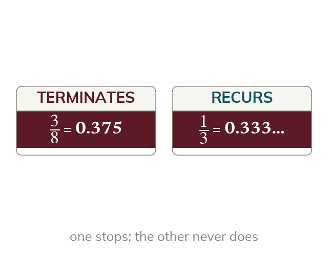
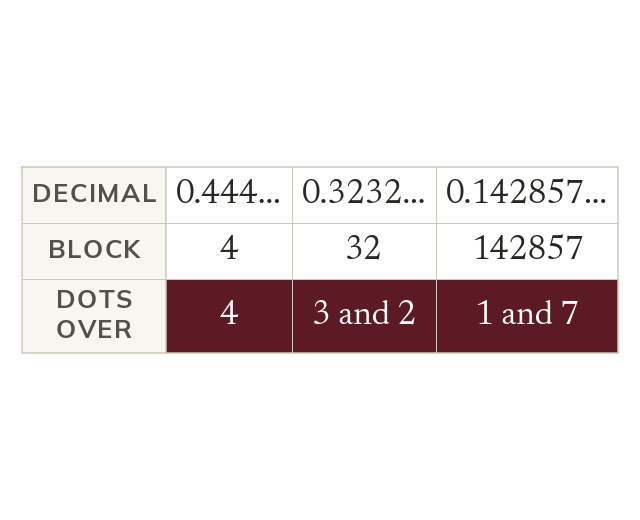
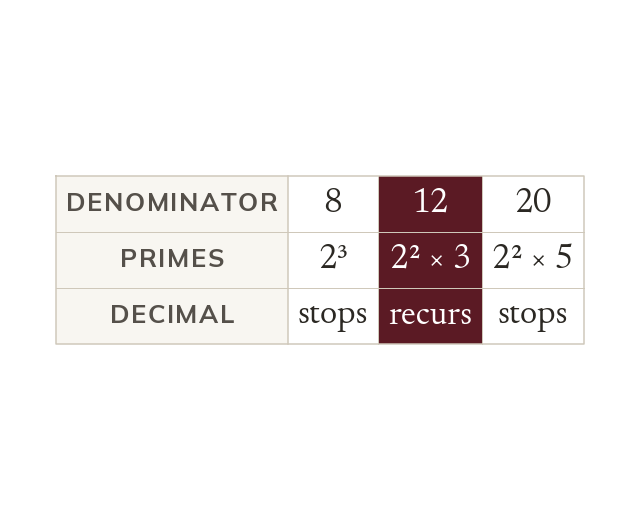
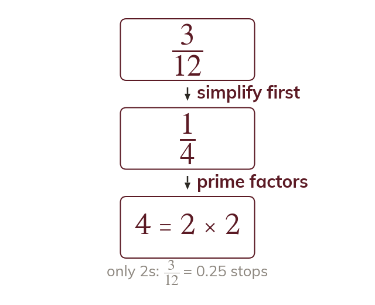

It stops, or it repeats
A terminating decimal stops, like
A recurring decimal repeats a block of digits for ever, like
A calculator shows as and has to stop somewhere. Knowing which fractions stop and which never do tells you when the display is exact.
Work down the page at your own pace. Write every answer in your book first, then click to check it.
Read each card, then follow the worked examples one step at a time.

A terminating decimal stops, like
A recurring decimal repeats a block of digits for ever, like

Dots mark the first and last digits of the repeating block. So has dots over the and the
Pick an answer. If it's wrong, the feedback tells you which mistake it was.
Read each card, then follow the worked examples one step at a time.

A fraction in simplest form terminates only if its denominator's primes are s and s. Any other prime factor, such as or makes it recur.

Test the denominator only once the fraction is in its simplest form. and so terminates.
Pick an answer. If it's wrong, the feedback tells you which mistake it was.
Finished? Next lesson: 10.13.7 Upper and Lower Bounds.
Log in, then search for a code to practise that skill.